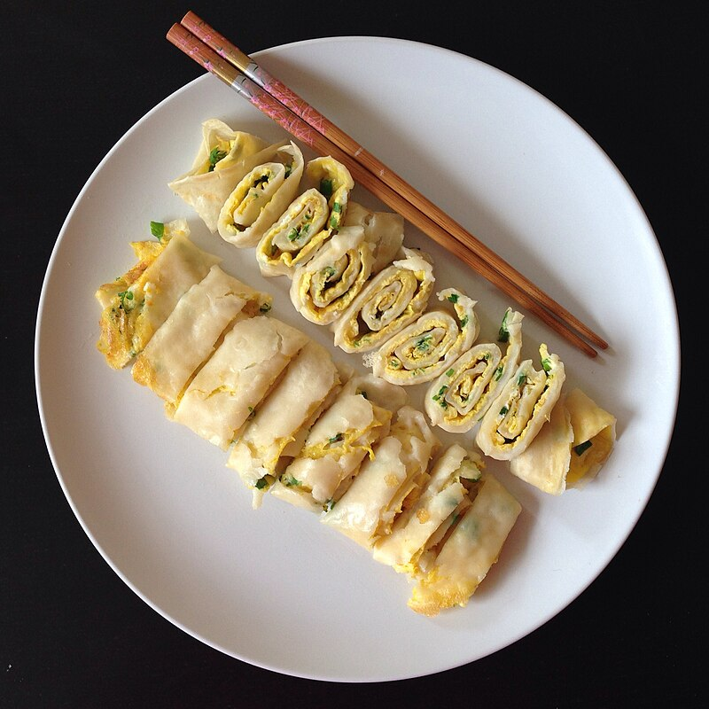

DanBing(蛋餅, Rolled Egg Crepe)

This is an every-day recipe in Taiwan.
Bacon and egg are fried with a tortilla and served with hot sauce.
If you are an average picky-eater, you will probably not enjoy.
You may use either bacon or ham.
Soruce
Ingredients
- 1 slice bacon
- 1 egg, beaten
- 1 (6 inch) corn tortilla
- ¼ cup sweet corn kernels
- 1 tablespoon smooth salsa
Steps
- Fry the slice of bacon in a skillet over medium-high heat. Set aside. Reduce the heat to medium. Pour the egg into the skillet, and sprinkle with corn. Cook for less than 10 seconds.
- Lay the tortilla over the whole egg. After the egg is firm and attached to the tortilla, flip over, and lay the bacon on top. Put salsa over the bacon, and wrap. Remove from the skillet, cut into small pieces and serve hot.
Back to Home